"A Casa"
Um livro sobre imaginar, crescer e encontrar significado nas coisas simples.
Inspirado na música "A Casa", de Vinícius de Moraes, este projeto nasceu da vontade de transformar uma canção que atravessou gerações em uma experiência capaz de despertar curiosidade, memória e imaginação. Mais do que ilustrar uma música, queríamos criar um espaço onde cada pessoa pudesse encontrar sua própria interpretação do que significa uma casa.
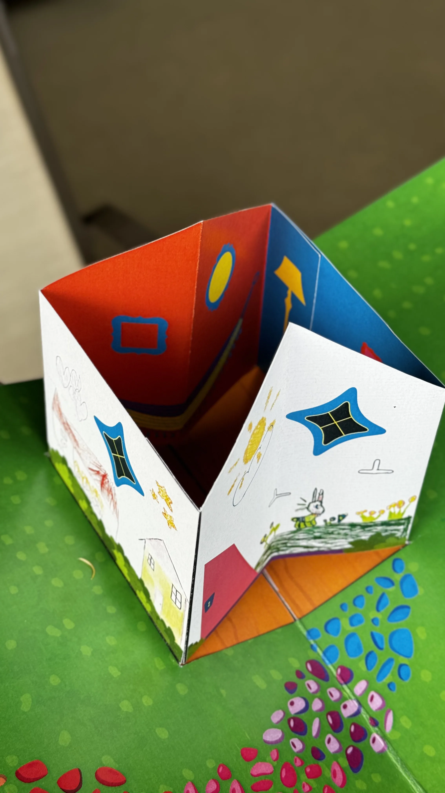
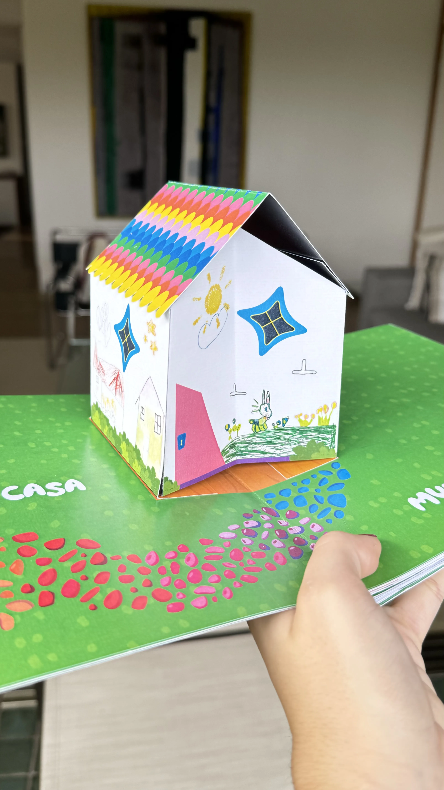
O que existe dentro de uma casa?
Quando ouvimos a música de Vinícius de Moraes pela primeira vez durante o projeto, percebemos que ela falava de muito mais do que paredes, portas e janelas.
Aquela casa sem teto, sem chão e sem parede parecia impossível. Mas justamente por isso abria espaço para infinitas interpretações.
Foi nesse momento que surgiu uma pergunta que guiaria todo o desenvolvimento:
E se cada pessoa enxergasse uma casa diferente?
Antes de desenhar uma casa, precisávamos entender o que ela significava.
Começamos explorando referências de livros infantis, livros pop-up, experiências editoriais e mecanismos interativos. Visitamos livrarias, analisamos obras físicas... mas a pesquisa mais importante não estava nos livros:
Estava nas pessoas.
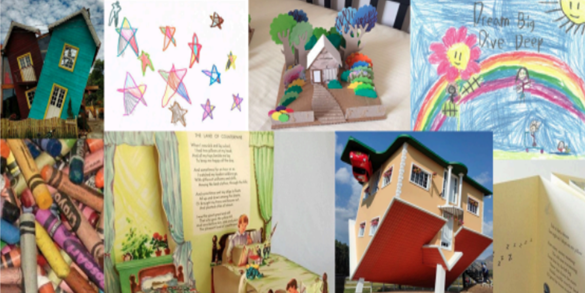
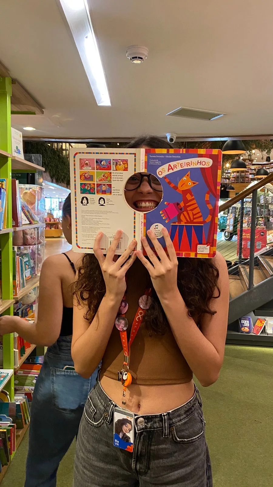
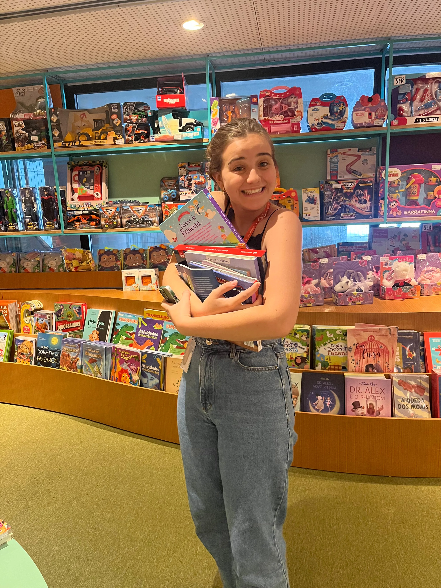
A casa vista por quem ainda imagina sem limites
Decidimos pedir que crianças desenhassem suas próprias casas. Não demos respostas. Não sugerimos formatos. Não mostramos referências.
Apenas perguntamos:
O que é uma casa para você?
As respostas vieram em forma de vídeos, complementados com desenhos especiais. Alguns mostravam famílias. Outros mostravam árvores. Outros mostravam cores. Outros mostravam sonhos.
Naquele momento percebemos que o projeto não deveria contar apenas a nossa interpretação da música. Ele precisava dar espaço para muitas interpretações coexistirem.
Quando o papel deixa de ser papel
Os mecanismos pop-up não foram pensados apenas como elementos visuais. Cada movimento tinha um propósito:
Queríamos que o leitor participasse da história.
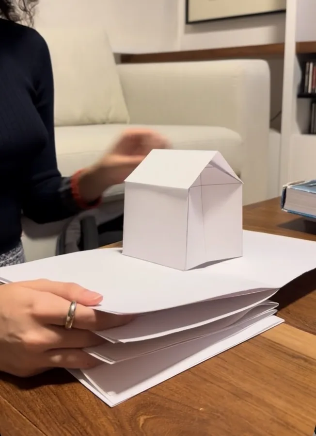
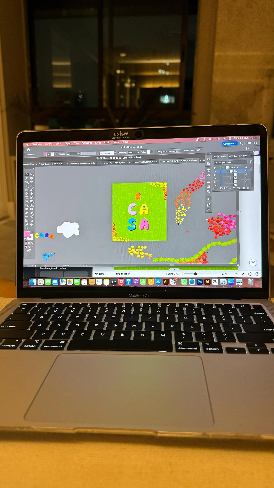
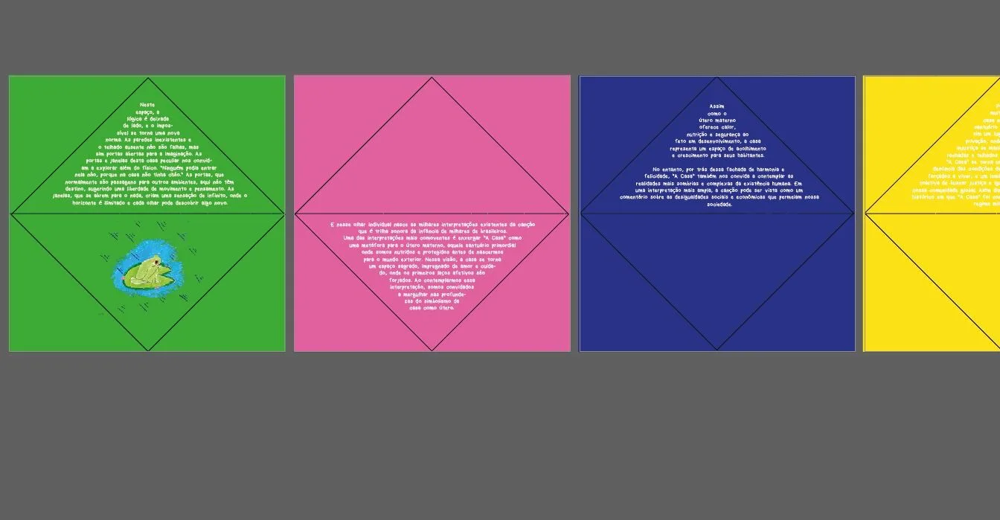
A parte mais difícil e mais bonita do projeto
Durante semanas construímos, desmontamos e reconstruímos páginas. Testamos encaixes, refizemos mecanismos, ajustamos cortes... até perdermos páginas.
Transformamos arquivos digitais em objetos físicos e, pouco a pouco, aquela ideia começou a existir fora da tela.
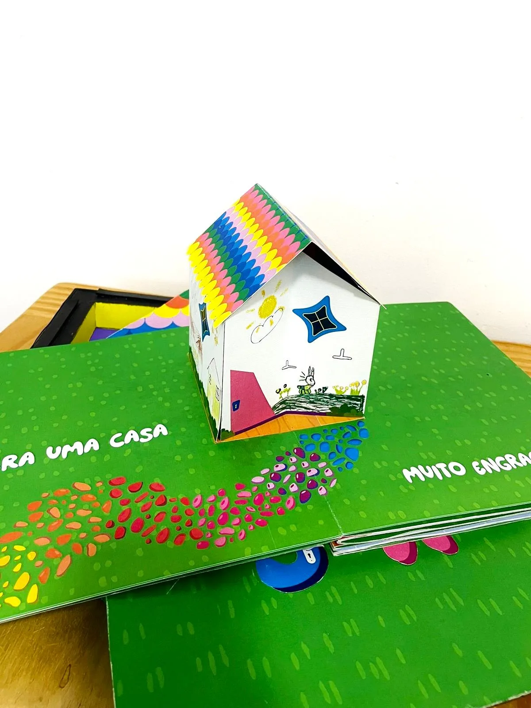
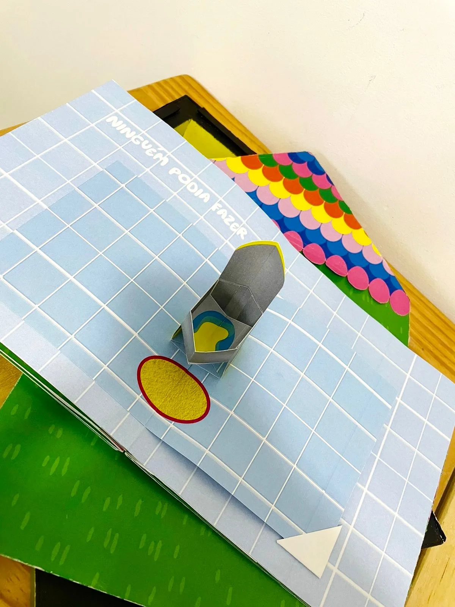
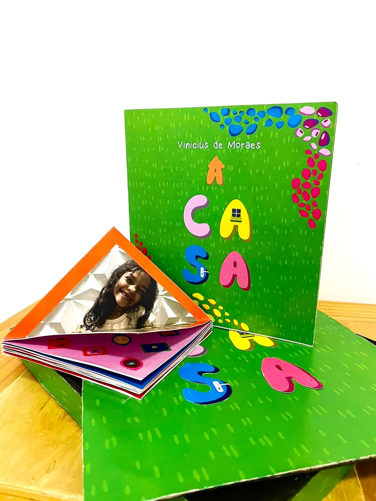
A Casa
O projeto final é um livro pop-up interativo inspirado na música de Vinícius de Moraes, que convida o leitor a descobrir diferentes significados para a palavra "casa".
Mais do que um livro infantil, ele se tornou um convite à imaginação. Um objeto que mistura música, design, narrativa e memória.
Algumas casas têm paredes. Esta foi construída com histórias.
Vamos criar algo incrível juntos?
Estou sempre aberta a novos desafios e colaborações. Me conta!